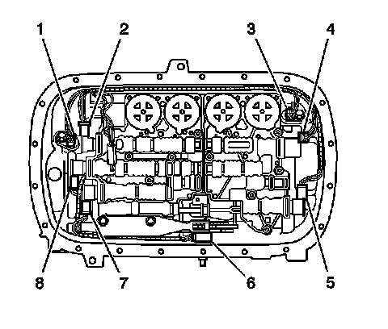
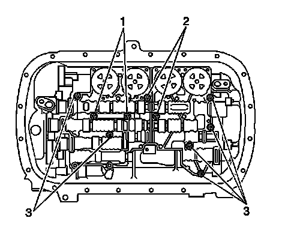
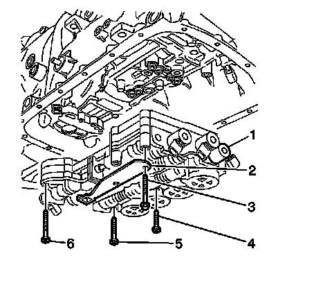
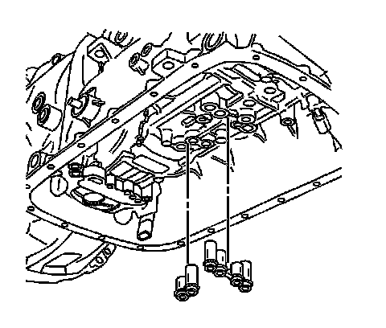
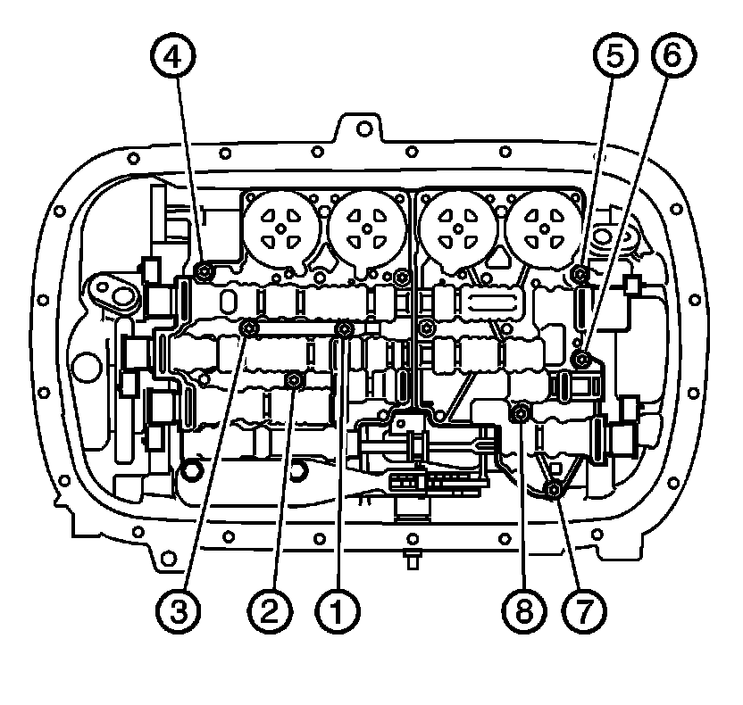

Accumulator: Service and Repair
Control Valve Body Accumulator Assembly Replacement
Removal Procedure
1. Remove the transmission fluid pan and filter. Refer to Automatic Transmission Fluid and Filter Replacement (Removal and Replacement) .

2. Disconnect the internal electrical wiring harness connectors from all internal electrical components (1-8).

3. Remove ONLY bolts (1, 3) from the valve body assembly. Do NOT remove bolts (2) called out in the graphic.

4. Remove the bolts (3) securing the control valve body accumulator assembly (1) and manual shaft detent assembly (2) to the transmission case.
5. Remove the manual shaft detent assembly (2) and control valve body accumulator assembly (1) from the transmission.

6. Remove the fluid passage sleeves only if replacement of the sleeves is necessary.
Installation Procedure
1. Install NEW fluid passage sleeves if previously removed.
2. Install the control valve body accumulator assembly (1) and manual shaft detent spring (2) to the transmission.
3. Install the manual shaft detent spring bolts (3) and hand tighten.

4. Confirm that the manual shift shaft detent lever locating pin (2) is properly engaged with the manual valve link (1).
5. Confirm that the detent spring roller (4) is properly engaged with the manual shift shaft switch (3).
6. Install the control valve body accumulator assembly to the transmission case bolts (1-3) and hand tighten.

Important: If the bolts are tightened at random, valve bores may become distorted and inhibit proper valve operation.
Notice: Refer to Fastener Notice (Fastener Notice) .
7. Tighten the control valve body assembly bolts in sequence.
Tighten the bolts to 11 N.m (97 lb in).

8. Install a 0.8 mm spacer (2) between the manual shaft detent lever (1) and the manual shaft detent spring (3).
9. Tighten the detent spring bolts.
Tighten the bolts to 11 N.m (97 lb in).
10. Remove the spacer (2).
11. Connect the internal electrical wiring harness connectors to all internal electrical components (1-8).
12. Install the transmission fluid pan and filter. Refer to Automatic Transmission Fluid and Filter Replacement (Removal and Replacement) .
Important: It is recommended that transmission adaptive pressure (TAP) information be reset.
Resetting the TAP values using a scan tool will erase all learned values in all cells. As a result, The ECM, PCM or TCM will need to relearn TAP values. Transmission performance may be affected as new TAP values are learned.
13. Reset the TAP values. Refer to Control Module References (Programming and Relearning) .